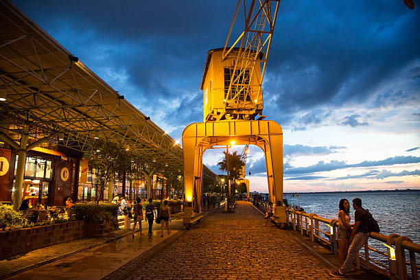
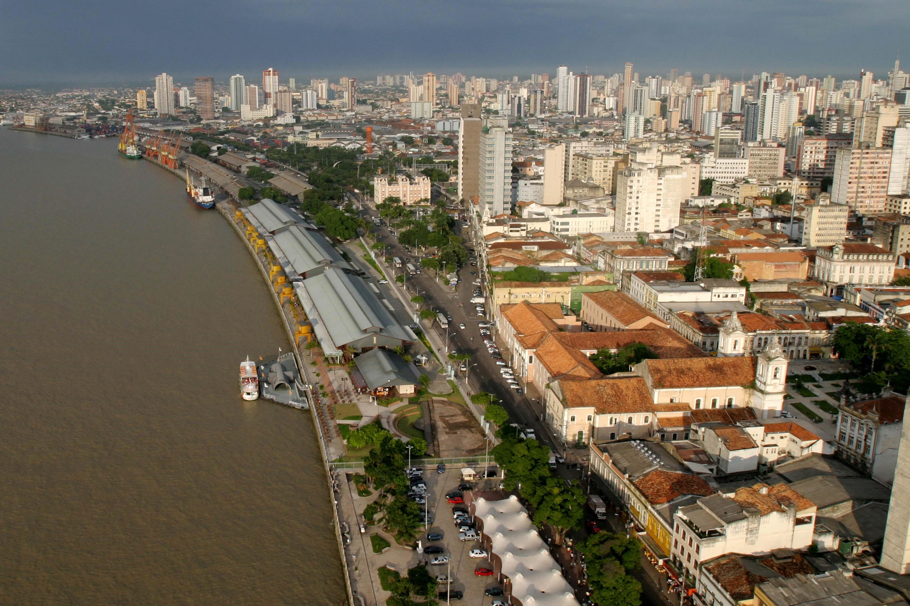
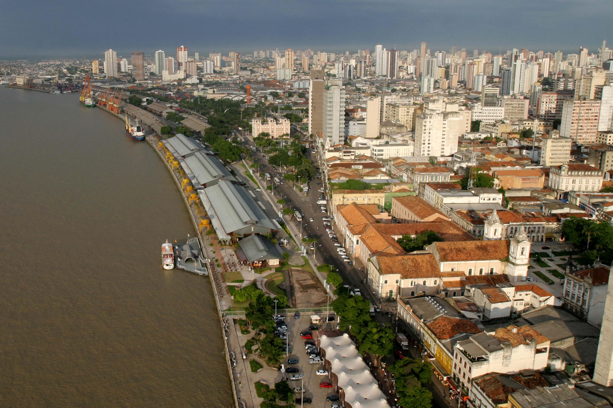
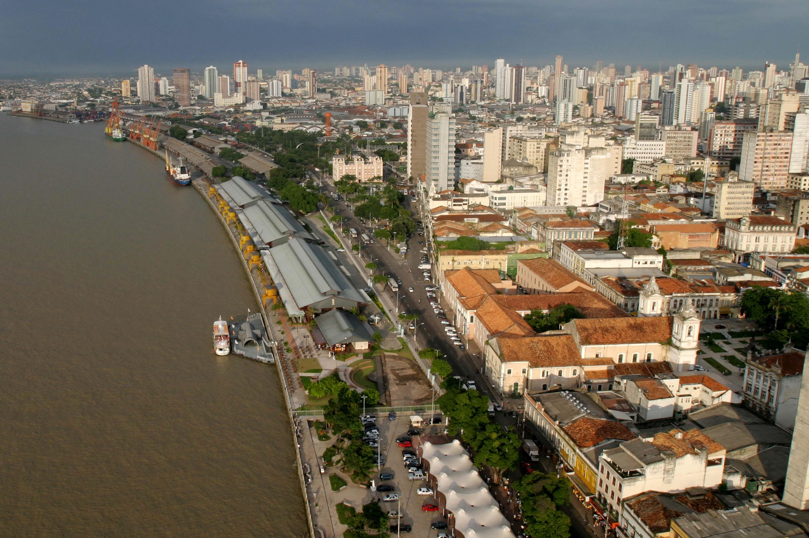

A First Look at Belém

 


Belém is a vibrant city in northern Brazil, full of life, color, and culture. Known for its rich culinary traditions and historic architecture, it's a unique blend of Indigenous, African, and Portuguese influences. Must-visits include the Ver-o-Peso market and colonial-era churches.